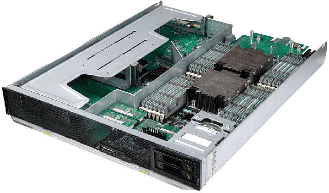

O que é um servidor:
Um servidor é um computador ou sistema de computadores que fornece serviços, dados ou recursos a outros computadores, aqui chamados de clientes, por meio de uma rede. Incluindo termos voltados para Web, um servidor web é um dispositivo que armazena e fornece páginas da web e outros conteúdos para navegadores.

O que é o Apache:
Além disso, Apache é um dos servidores web de código aberto mais populares. Apache é o Apache HTTP Server e serve conteúdo da web de volta para os navegadores dos usuários, ele processa solicitações HTTP e gerencia a conexão com o cliente.
O que é o Tomcat:
O Apache Tomcat é um servidor de aplicações open-source projetado pela Apache Software Foundation. É destinado a aplicar as especificações dos servlets e JSP do Java Enterprise Edition , agora referidas como Jakarta Enterprise Edition. Tomcat implementa várias partes do Java EE, ele fornece um ambiente para aplicações de execução Java web, dominado por um contêiner de servlets.